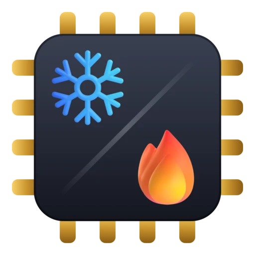

KAGO
Выполняется автоматический тюнинг-прогон видеокарты
CLK
MHz
8888
2842
TEMP
C
88
74
FAN
%
88
62
PWR
W
888
248
частота под тестом
2842 МГц
напряжение
995 мВ
сток 1045 · андервольт
−50 мВ
стресс-тест устойчивости
6,2
из 10 с
пройдено по диапазону частот
2842…2800
настроено частот
7 из 43
● ИДЁТ СТРЕСС-ТЕСТ
■ ЗАМЕРЛО — 2842 МГц / 995 мВ